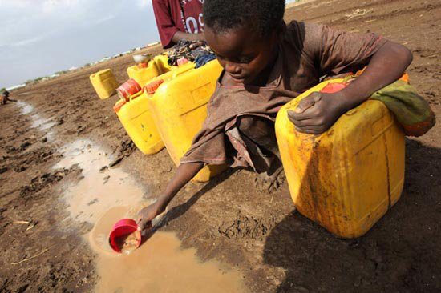
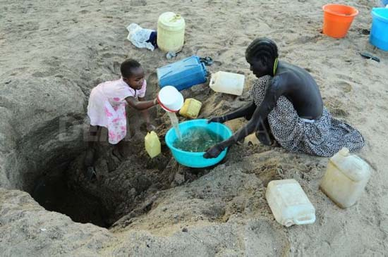

Clean water sources are gradually running out, replaced by polluted water !!!
2.Current situation of clean water in Vietnam and in the world
a) All around the world
Although more than 70% of the Earth's surface is covered by water with an amount of about 1.38 billion km³, of which 97.4% is salt water in the world's oceans, 2.6% is water Sweet (exists mainly in the form of snow and ice at the poles) but only 0.3% of the world's water (or 3.6 million km³) can be used as drinking water (clean water). The amount of other water is not clean enough, so many places have to use additional water filtration systems to remove impurities so that the water can be used.


Image source http://www.quatphunsuongkangaroo.com.vn/nhung-noi-khong-co-nuoc-sach-tren-the-gioi/tin-100.html>
Image source http://vietq.vn/loat-anh-doi-lap-voi-trao-luu-do-nuoc-da-len-dau-d39945.html.photo>
Lack of clean water kills about 700,000 African children every year. Providing clean water will be one of humanity's greatest challenges in the next few decades. Pollution of continental and ocean water is increasing at a worrying pace. The speed of water pollution honestly reflects the speed of economic development of nations. The more society develops, the more risk there is. We can list a few examples. In the United States, the tragic situation of water pollution also occurred in the east coast, as in many other areas. Large areas of the lake are seriously polluted, of which Lake Erie, Ontario is particularly polluted. In England, in the early 19th century, the Tamise was very clean. By the mid-20th century it became an open sewer. Other rivers also have similar situations before strict protection measures were introduced. In China, the annual amount of waste and industrial wastewater discharged in cities and towns increased from 23.9 billion cubic meters in 1980 to 73.1 billion cubic meters in 2006. A large amount of untreated waste is discharged into rivers. Consequently, most of the water in rivers and lakes becomes increasingly polluted.
b) In Vietnam
In industrial zones with hundreds of manufacturing units, tons of untreated waste water have been discharged directly into pipes, organic pollutants, intact domestic metals have penetrated into water sources.
In the cities, domestic waste is scattered around, causing obstructions to sewers. Water cannot be drained. Therefore when rain comes, people have to go to drain for drainage. The morale rivers and To Lich river are black and stink because of garbage.
In rural areas, due to difficult living conditions and backward facilities, domestic wastes and untreated wastes of cattle and poultry have seeped into underground water streams. If people use untreated groundwater, they will likely get water-borne diseases.
In addition, the overuse of fertilizers and plant protection substances in agricultural production leads to polluted canals and rivers, affecting human health.
According to statistics, up to 9,000 people die from water pollution each year, and 100,000 cases of cancer each year are caused by the use of polluted water. Survey of 37 communes called "cancer village" had 1,136 people died of cancer. Moreover, 380 people in neighboring communes also died of cancer.
Main content of the page
- -Concept of clean water and its role
- -Real situation of clean water around the world and in Vietnam
- -Concept of polluted water and its causes
- -Remedy for polluted water
Page information
-
 Overview
Overview
-
 Suggestion box
Suggestion box
-
 Telephone number: 0706893807
Telephone number: 0706893807